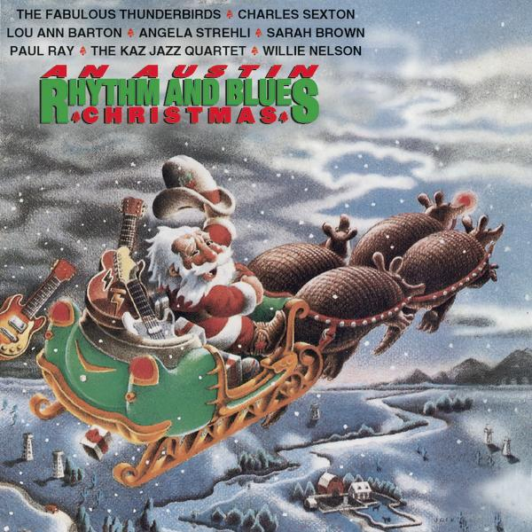

Essays:
Have Yourself a Merry Little Christmas
This is a favorite yuletide tune that has been recorded by almost everyone at least once.
Note that the lyrics have varied quite a bit since the song’s original composition.
Written by Hugh Martin and Ralph Blane, the song was introduced in the 1944 MGM musical Meet Me in St. Louis, as performed by Judy Garland. The occasion for the song was the announcement by the family’s breadwinner that they would all be moving from their beloved home and friends in St. Louis to New York City, in order to take advantage of a promotion at work. The family was not looking forward to the move, and the original lyrics included such cheery lines as these:
Have yourself a merry little Christmas:
It may be your last.
Next year we may all be living in the past.
However the star and singer Judy Garland, as well as director Vincente Minnelli, insisted that Martin revise the lyrics to make them more upbeat, resulting in the bulk of the heartwarming chestnut we know and love today.
When Frank Sinatra decided to record the tune in 1957, he requested yet another change in the lyrics, and the line “Hang a shining star upon the highest bough” replaced “Until then we’ll have to muddle through somehow.”
The first four lines below make up an introduction that is often omitted when the song is performed. The following lines are the ones most commonly sung today.
Christmas future is far away.
Christmas past is past.
Christmas present is here to stay,
Bringing joy that will last.Have yourself a merry little Christmas.
Let your heart be light.
From now on, our troubles will be out of sight.Have yourself a merry little Christmas.
Make the yuletide gay.
From now on, our troubles will be miles away.Here we are as in olden days,
Happy golden days of yore.
Faithful friends who are dear to us,
Gather near to us once more.Through the years we all will be together,
If the fates allow.
Hang a shining star upon the highest bough,
And have yourself a merry little Christmas now.
The unique achievement of this song lies in the way it ties together images of the past, future and present into one neat and comforting package, using a simple and universal set of words.
By use of the phrase “From now on…” the singer references an implied past containing some amount of trouble.
However the reference to “happy golden days of yore” as well as “faithful friends” implies a trove of happy moments from the past as well.
By saying “our troubles will be out of sight” and “our troubles will be miles away,” the song implies a happy future for us.
And then the line “through the years we all will be together” implies a thread of continuity from the past, through the present, to the future.
Most importantly, though, the bulk of the focus is on enjoying the present, as is clear from the title and repeating opening line, as well as the following lines “Let your heart be light,” and “Make the yuletide gay.”
Taken all together, the words and images make for a very attractive bundle of sentiments for the holidays.
There are many serviceable renditions of this song available, as well as some underwhelming ones. The one I will recommend to you is by Paul Ray, and can be found on the altogether excellent album An Austin Rhythm and Blues Christmas, originally released in 1983. This version clocks in at just under three-and-a-half minutes, so it can’t be accused of being either slow or self-indulgent. Ray is accompanied by a full set of horns that add colorful ornamentation, but don’t overwhelm the singer or his sentiments. Bass, guitar, piano and drums all contribute as well to the overall sound, making for a joyful and gently swinging delivery. You can hear this cut on Apple Music.
Enjoy!
Next: “Christmas Song” by Dave Matthews
Or see the complete list of Christmas Favorites from The Practical Utopian.
December 17, 2020